Worldwide asylum trends
Is asylum processing keeping up with reported applications?
Worldwide trends · Processing pressure · 2000–2025
When applications arrive faster than decisions are recorded, asylum systems face sustained processing pressure. This report examines the volume coming in, the decisions coming out, and the unresolved caseload observed at year end.
The central question is whether recorded processing output is keeping up with reported applications. Compare worldwide trends here, then explore national patterns on the Processing Productivity page.
Persons and cases combined
Persons and cases combined
Observed UNHCR stock (persons)
Application and decision totals: latest shared year in the saved extracts. These totals are not estimates of complete worldwide coverage, and applications are not necessarily unique individuals. Pending stock is a separate population measure: 8,998,097 persons, from the UNHCR worldwide population API, retrieved 2026-11-05. The stock chart uses the same latest-year total from its separately saved annual-series snapshot.
Where are applications concentrated?
40,727,399 reported applications worldwide, 2000–2025. The two pies describe the same recorded application total from different perspectives: where applications were received and where they originated.
Top 20 receiving countries
30.7 million applications

Top 20 reported origins
24.8 million applications

Each Top 20 is selected by total application volume across the full period, matching the country galleries. The origin group includes Unknown origin. Original persons- and case-reported values are added without conversion: these are reported application events, not unique people or estimates of unreported worldwide activity.
Compare activity per 100,000 residents ? Explore both Top 20 groups on a map ? Receiving-country profiles · Origin profiles and exact volumes · Download these totals (CSV)
What applications means here. Application and decision figures combine original persons- and case-reported values without conversion. These are reported activities, not unique people or harmonised counts of cases. Applications include new claims, repeats, appeals, and other or unspecified types. Different reporting units and coverage affect comparisons.
Explore the coloured country profiles: Origins & destinations features the Top 20 reported origins by application volume (2000-2025), plus a dropdown for all recorded origins.
Choose a receiving country: Open the interactive country explorer for applications, decisions, source downloads, and its latest refresh date.
The worldwide pattern: growth, peaks and processing pressure
Reported applications rose from 2,245,518 in 2019 to 3,343,203 in 2025. Applications in 2025 were 49% higher than in 2019 (2,245,518). The recent expansion was not a continuous rise: the series peaked at 3,848,894 in 2023. Applications in 2025 were 2.3% lower than in 2024 (3,421,776). This distinction matters: a high level of demand and a growing unresolved caseload can coexist with a fall in new applications.
In 2025, 2,836,187 decisions were recorded against 3,343,203 applications: 85 decisions per 100 applications. Applications exceeded decisions in 16 of the 26 years. Persistent shortfalls indicate processing pressure, although the difference is not an observed backlog. The separate end-year stock series is the appropriate evidence for unresolved claims; see what remains unresolved.
The stock of unresolved claims has also expanded. The separately reported end-year asylum-seeker population rose from 4,148,141 in 2019 to 8,998,097 in 2025 (117% higher), including a 7.7% rise from 2024. Unlike the mixed-unit application totals, this stock is reported in persons. It is not obtained by summing annual flow gaps.
Read the changes as reported activity. The series combines persons and cases, application types and procedures, and changing source coverage. It counts application events rather than unique people. Growth in these totals cannot on its own identify the causes of migration, demonstrate onward movement, or establish that future pressure must increase.
Is processing output keeping up?
Recorded decisions fell below reported applications in 16 of 26 years between 2000 and 2025. In 2025, the extracts record 3,343,203 applications and 2,836,187 decisions: 85 decisions per 100 applications. The annual flow difference was 507,016. This is a mixed-unit comparison of recorded flows, not a measured increase in the pending caseload.

Repeated years with lower recorded output than inflow signal processing pressure. Differences in reporting coverage, units, and procedures mean these figures alone cannot establish a reconciled backlog. Decisions may concern applications lodged in earlier years.
1. Applications and decisions follow different timelines
In this combined reported-applications extract, application volume is highest in 2023, at 3,848,894 recorded events. The latest shared year, 2025, contains 3,343,203. Those are descriptions of the saved records—not adjusted estimates of global demand. The coverage check below helps qualify the comparison.
The bars separate application types, while the blue decisions line shows the volume recorded in the same year. They do not link the people applying with the people receiving decisions. A claim filed in one year may be decided in another.

What to take from this: compare the flows, but avoid describing their ratio as a success rate, a waiting time, or a measure of processing efficiency.
2. A decision does not always mean recognition
The source distinguishes recognised refugee status, complementary protection, rejection, and administrative closure. Looking only at recognised decisions would leave out substantial parts of what asylum authorities record.
The next chart shows how decision composition changes by year. Each ring describes that year’s decisions, rather than the eventual outcomes of applications lodged that year.
One year, one picture. Each ring divides that year’s decisions into four outcomes; the centre shows the included decision count. Only source records whose four outcomes reconcile to their recorded total are included; coverage is shown on each card.
2000
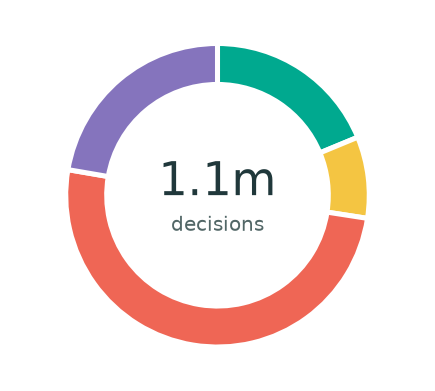
- Refugee status19%
- Other protection8.7%
- Rejected50%
- Otherwise closed22%
1,076,202 decisions included
of 1,090,296 reported (99%)
2001
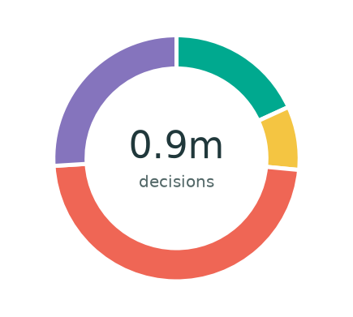
- Refugee status18%
- Other protection8.4%
- Rejected48%
- Otherwise closed26%
927,283 decisions included
of 946,486 reported (98%)
2002
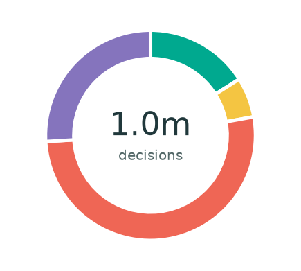
- Refugee status16%
- Other protection6.2%
- Rejected52%
- Otherwise closed26%
1,005,992 decisions included
of 1,010,251 reported (100%)
2003
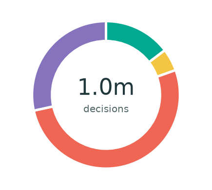
- Refugee status15%
- Other protection4.9%
- Rejected52%
- Otherwise closed28%
998,490 decisions included
of 1,002,084 reported (100%)
2004
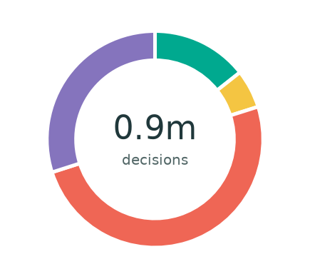
- Refugee status14%
- Other protection5.7%
- Rejected50%
- Otherwise closed30%
891,116 decisions included
of 891,175 reported (100%)
2005
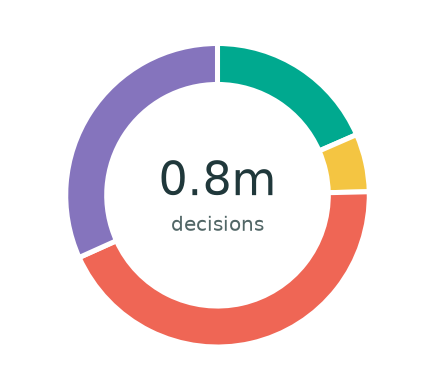
- Refugee status18%
- Other protection6.2%
- Rejected44%
- Otherwise closed32%
829,228 decisions included
of 829,228 reported (100%)
2006
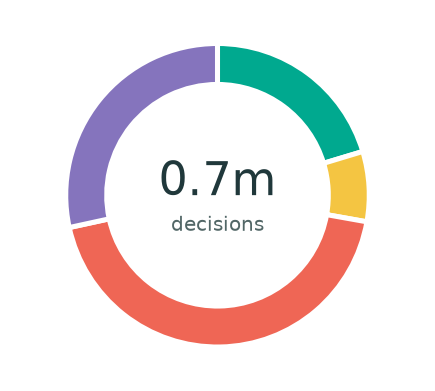
- Refugee status20%
- Other protection7.5%
- Rejected44%
- Otherwise closed28%
679,851 decisions included
of 692,537 reported (98%)
2007
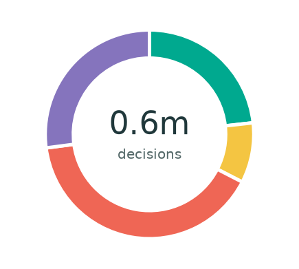
- Refugee status23%
- Other protection9.3%
- Rejected40%
- Otherwise closed27%
642,729 decisions included
of 644,001 reported (100%)
2008
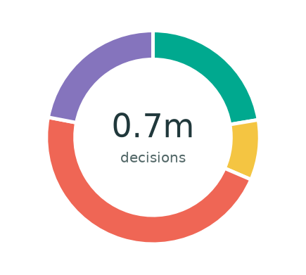
- Refugee status22%
- Other protection9.1%
- Rejected47%
- Otherwise closed22%
697,502 decisions included
of 706,269 reported (99%)
2009
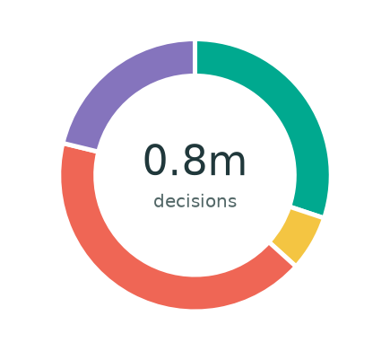
- Refugee status30%
- Other protection6.6%
- Rejected42%
- Otherwise closed21%
760,868 decisions included
of 762,119 reported (100%)
2010
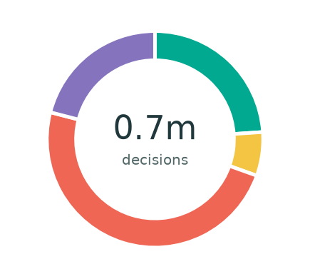
- Refugee status24%
- Other protection6.5%
- Rejected49%
- Otherwise closed21%
727,845 decisions included
of 730,596 reported (100%)
2011
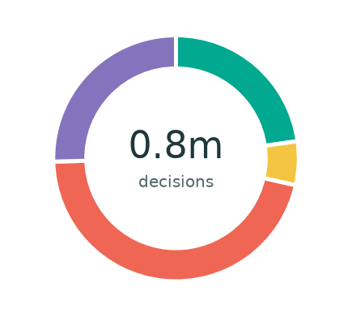
- Refugee status23%
- Other protection5.8%
- Rejected46%
- Otherwise closed25%
754,172 decisions included
of 768,675 reported (98%)
2012
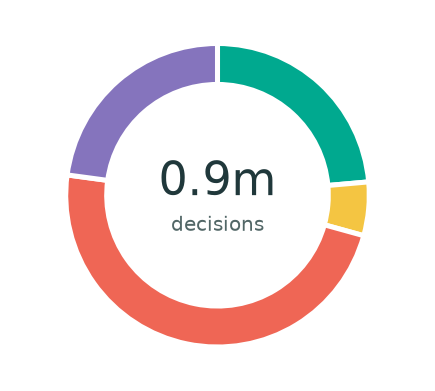
- Refugee status24%
- Other protection5.7%
- Rejected48%
- Otherwise closed23%
893,398 decisions included
of 913,275 reported (98%)
2013
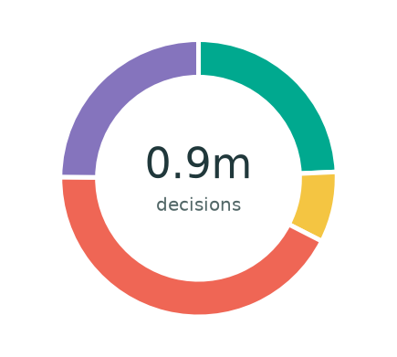
- Refugee status24%
- Other protection8.2%
- Rejected43%
- Otherwise closed25%
880,516 decisions included
of 880,516 reported (100%)
2014
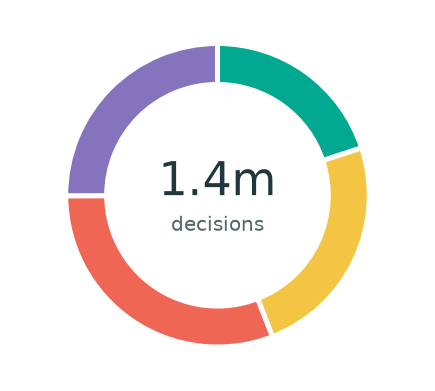
- Refugee status20%
- Other protection24%
- Rejected31%
- Otherwise closed25%
1,393,642 decisions included
of 1,393,642 reported (100%)
2015
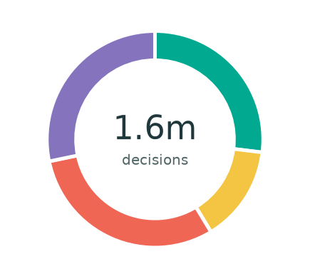
- Refugee status27%
- Other protection14%
- Rejected30%
- Otherwise closed28%
1,647,628 decisions included
of 1,647,628 reported (100%)
2016
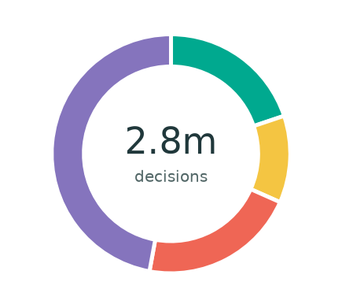
- Refugee status20%
- Other protection12%
- Rejected21%
- Otherwise closed47%
2,844,805 decisions included
of 2,844,805 reported (100%)
2017
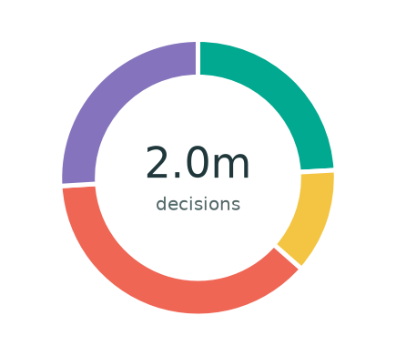
- Refugee status24%
- Other protection12%
- Rejected38%
- Otherwise closed26%
2,006,176 decisions included
of 2,006,176 reported (100%)
2018
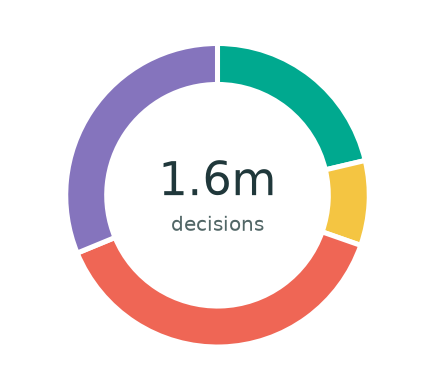
- Refugee status21%
- Other protection9.0%
- Rejected38%
- Otherwise closed31%
1,646,871 decisions included
of 1,647,261 reported (100%)
2019
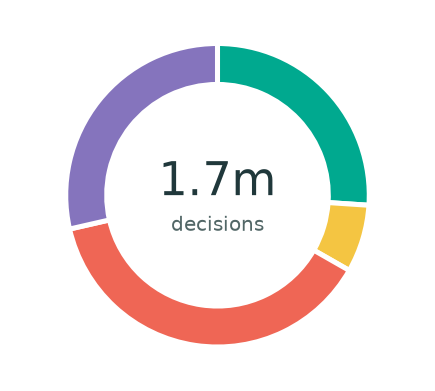
- Refugee status26%
- Other protection7.2%
- Rejected38%
- Otherwise closed29%
1,715,050 decisions included
of 1,730,880 reported (99%)
2020
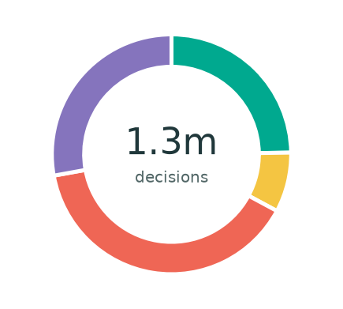
- Refugee status25%
- Other protection8.1%
- Rejected39%
- Otherwise closed28%
1,349,286 decisions included
of 1,381,088 reported (98%)
2021
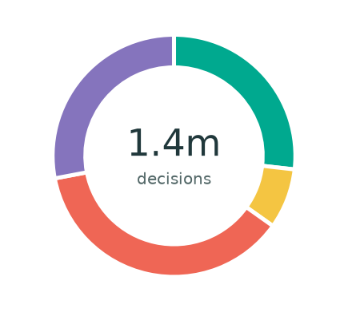
- Refugee status27%
- Other protection8.0%
- Rejected37%
- Otherwise closed28%
1,422,047 decisions included
of 1,422,047 reported (100%)
2022
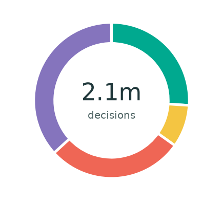
- Refugee status26%
- Other protection8.8%
- Rejected28%
- Otherwise closed37%
2,057,838 decisions included
of 2,057,838 reported (100%)
2023
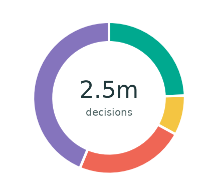
- Refugee status25%
- Other protection8.4%
- Rejected23%
- Otherwise closed44%
2,498,303 decisions included
of 2,498,303 reported (100%)
2024
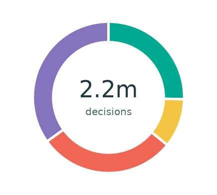
- Refugee status25%
- Other protection10%
- Rejected29%
- Otherwise closed35%
2,164,386 decisions included
of 2,164,386 reported (100%)
2025
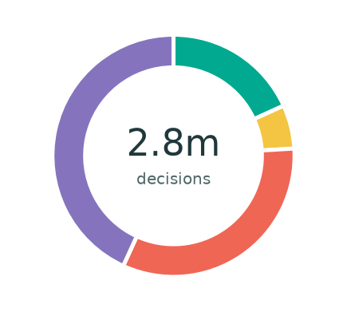
- Refugee status18%
- Other protection5.8%
- Rejected33%
- Otherwise closed43%
2,836,187 decisions included
of 2,836,187 reported (100%)
Each percentage uses all decisions in the included, reconciled records for that year, including administrative closures. Source records with missing outcomes, inconsistent totals, or no positive decision total are excluded; the inclusion percentage compares eligible decision totals with all reported decision totals. The headline application and decision totals still use the full extract. Original persons- and case-reported counts are combined without conversion. Rounded percentages may not sum to 100%. Coverage and procedure mix can change between years; these are not application-cohort success rates.
Download annual decision counts and unrounded shares (CSV)
Across the full 2000–2025 combined reported-units extract, 22% of all recorded decisions recognised refugee status and 32% were otherwise closed. These period shares weight each recorded decision equally; they are not averages of national percentages or the likelihood that a new applicant receives protection.
The recognised share of all decisions includes administrative closures in the denominator. UNHCR’s refugee recognition rate uses substantive decisions and excludes those closures. A percentage calculated one way should not be labelled as the other. See the definitions and formulae.
3. What remains unresolved?
Subtracting annual decisions from applications can be tempting. But the result is a difference between flows—not a count of unresolved claims.
Here we use UNHCR’s observed end-year asylum-seeker stock, reported in persons. This retains its original population unit; it is not an application count. This is a separate population series, reported at a date. It is not reconstructed by adding up the gaps between the bars in the first figure.

What to take from this: use observed stocks when asking how many claims are pending. Annual applications minus decisions cannot establish a reconciled backlog, and these data do not provide individual waiting times.
Before interpreting the latest year, check who reported
A worldwide sum can change because of the records available, as well as because of underlying events. One practical check is to count receiving-country codes represented in each year’s data.
In 2025, the saved application data includes 139 receiving-country codes, compared with 154 in 2024. Decision data includes 142, compared with 152. Each code is counted once per year in each file, regardless of application volume or whether the record uses persons or cases. A record with zero reported volume still counts as reporting presence. These panels show how widely the data covers receiving countries, not how many applications were received.

This does not tell us which explanation accounts for a change in volume. It does tell us why a lower recorded total should not automatically become a claim that worldwide demand has fallen by the same proportion.
Understanding processing pressure
The processing story has three parts: incoming applications, recorded decision output, and the separately observed unresolved caseload:
- Applications: how many application events were recorded, and of which types?
- Decisions: what outcomes did reporting authorities record?
- Pending claims: what unresolved stock was observed at the reporting date?
They do not, by themselves, explain national policy differences, measure an applicant’s chance of recognition, or establish how long people wait.
Go further: Read the methods and sources, inspect the full analysis notebook, or explore UNHCR’s methodology.
This is an independent analysis, not an official UNHCR publication. Figures describe the saved extracts and observed stock data used for this edition.